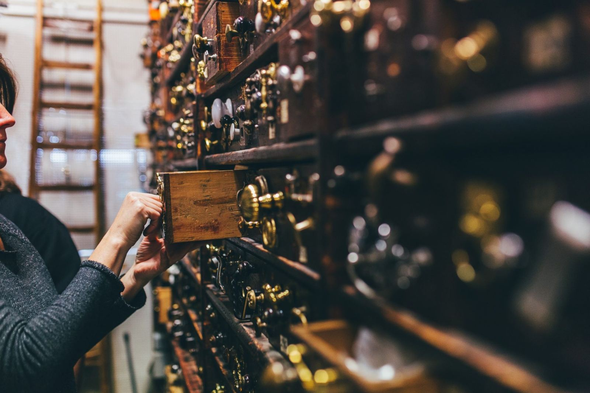
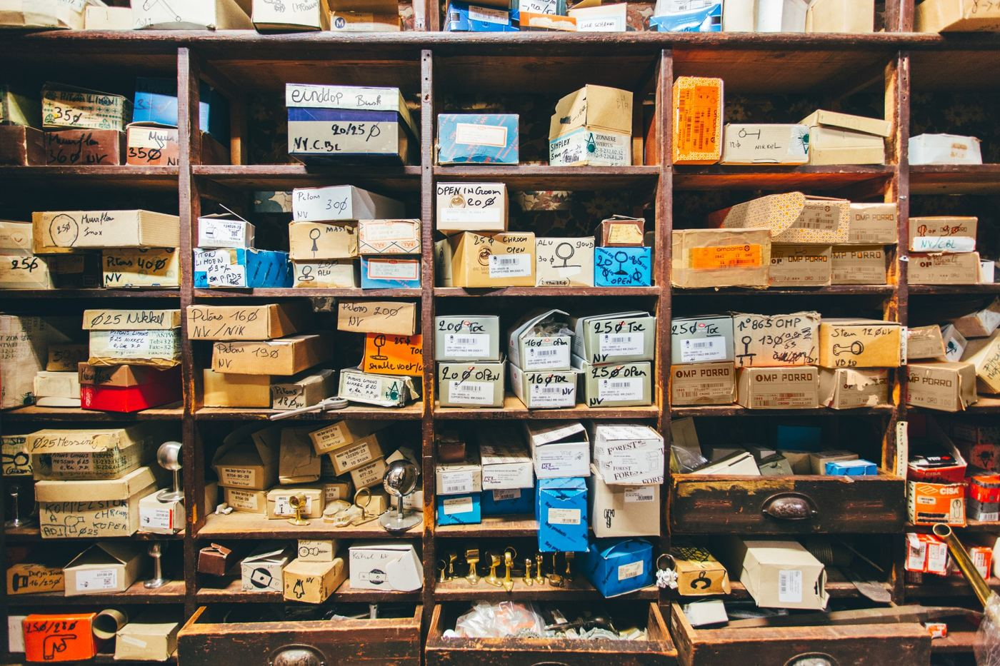
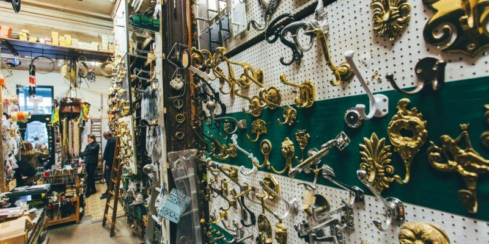
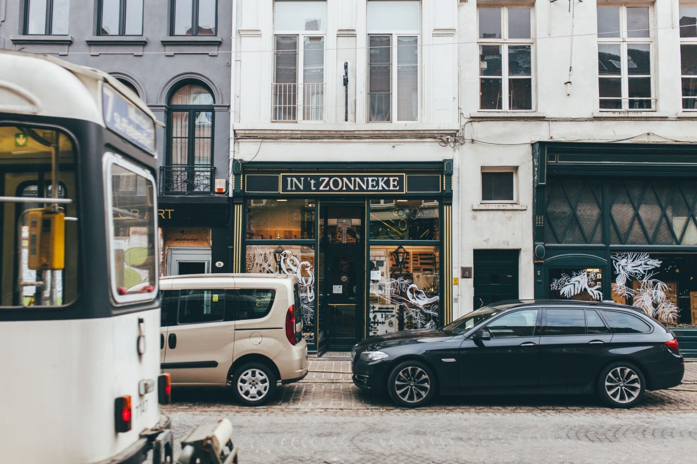

Sint-Jorispoort 8, Antwerpen · meer dan een eeuw
Deur- en meubelbeslag, ijzerwaren en maatwerk uit eigen atelier.
Klinken, knoppen, scharnieren, kloppers en sluitwerk voor wie een huis, een meubel of een monument juist wil afwerken. Bekijk een greep uit het assortiment online en zet klaar wat je in de winkel wilt vastnemen.

Ma 13:30–17:30 · di–vr 9:00–12:30 en 13:30–17:30 · za 9:30–12:30
Vakantiesluitingen staan hier altijd bovenaan, zodat je nooit voor een gesloten deur staat.
Een greep uit wat er in de laden ligt, per stijl. Zie je iets voor je deur of meubel? Zet het op je bezoeklijst, kies een dag, en we leggen het klaar zodat je het in de hand kunt nemen.
Beslag koop je met je handen: gewicht, afwerking, hoe een klink valt. Daarom geen webshop, wel een bezoeklijst. Wij leggen je keuze klaar, met alternatieven uit dezelfde reeks.
Je bezoeklijst
Ons neusje van de zalm: een enorme keuze aan exclusief binnen- en buitendeurbeslag, aangepast aan de noden van vandaag. Daarrond een volledige ijzerwarenwinkel met drogisterij.

Knoppen, grepen, sleutelplaatjes en scharnieren voor kasten, commodes en keukens, van klassiek tot strak.
Deurkrukken, rozetten, schilden en schuifdeurbeslag voor binnendeuren.
Voordeurknoppen, kloppers, brievenbusklepen, belknoppen en huisnummers.
Sloten, scharnieren, raamcremonen en stalheffers, ook voor restauratie.
Hoogwaardige gordijnophangsystemen met bijhorende gordijnroeden.
Kapstokken, haken, hoedenrekken en luxueuze badkameraccessoires.
Kuisproducten, verf, borstels en textielverf voor het dagelijkse werk in huis.

Gedreven vakmanschap en creativiteit in ons eigen atelier staan symbool voor een afwerking op maat. Een oud slot dat weer moet sluiten, een sleutel die er niet meer is, beslag dat aangepast moet worden aan een deur van honderd jaar oud: breng het mee.
Voor aannemers, (binnenhuis)architecten, restaurateurs, schrijnwerkers en particulieren.
"Frederik was heel behulpzaam en loodste ons met gemak door."
"Hier wordt nog een oud slot aangepast aan een sleutel!"
In 't Zonneke is al meer dan een eeuw een vaste waarde in authentiek en ambachtelijk deur- en meubelbeslag. De familie Eyckerman en hun team maken tijd voor iedere klant en volgen de trends in het vak op de voet.
Klanten komen uit Antwerpen-centrum, Berchem, Borgerhout, Zurenborg, het Zuid en Wilrijk, en vakmensen uit heel Vlaanderen.
